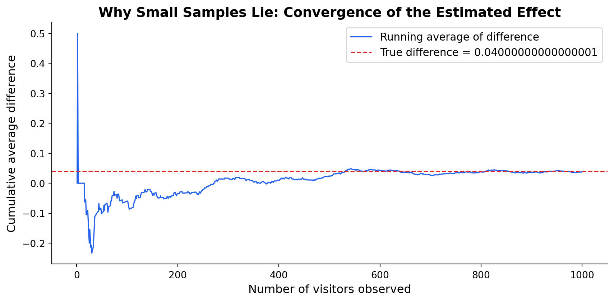
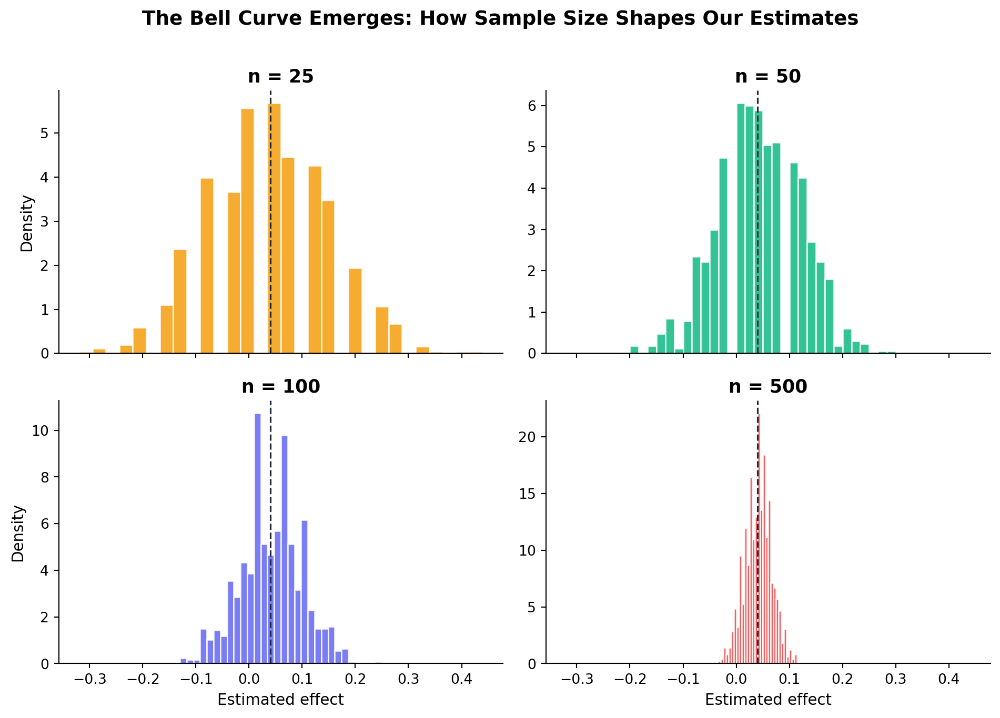

What a Simple Button Taught Me About Statistical Thinking
A/B Testing
Statistics
Marketing Analytics
I ran a simulated A/B test on two newsletter CTAs — and the real lesson wasn’t which button won, but how easily intuition can mislead us without the right statistical guardrails.
Author
Yafei (Judie) Zhang
Published
April 13, 2025
The Question That Started It All
During my MSBA coursework, I found myself staring at a deceptively simple question: if you change the wording on a sign-up button, how do you know whether the new version is actually better — or whether you just got lucky?
It sounds trivial. But the deeper I dug, the more I realized this tiny question sits at the heart of every data-driven marketing decision. Every product launch, every email subject line, every pricing experiment — they all come down to the same challenge: separating signal from noise.
So I built a simulation from scratch — not because I had to, but because I wanted to feel the statistics, not just compute them. Here’s what I learned.
Setting the Scene
Picture this: you run a website and your landing page has a newsletter sign-up prompt. For months you’ve used “Sign up for our newsletter here!” (CTA A). A colleague suggests trying “Stay up to date — join our list!” (CTA B). Which one actually converts better?
The temptation is to just try the new one for a week and compare. But that approach is riddled with hidden traps — day-of-week effects, seasonal traffic shifts, different user segments arriving at different times. What we need is an A/B test: randomly splitting visitors so the only systematic difference between groups is the CTA they see.
I modeled each visitor’s behavior as a coin flip — a Bernoulli trial — where the probability of signing up depends on which CTA they saw:
\[
\theta = \pi_A - \pi_B
\]
Playing the role of an omniscient simulator, I set \(\pi_A = 0.22\) and \(\pi_B = 0.18\) — a 4-percentage-point lift for CTA A — then generated 1,000 visitors per group.
Code
import numpy as npimport pandas as pdimport matplotlib.pyplot as pltfrom scipy import statsnp.random.seed(42)# True parameters (known only to us, the simulators)pi_A =0.22pi_B =0.18theta_true = pi_A - pi_B # 0.04# Simulate 1,000 visitors per groupn =1000cta_a = np.random.binomial(1, pi_A, size=n)cta_b = np.random.binomial(1, pi_B, size=n)# Point estimatetheta_hat = cta_a.mean() - cta_b.mean()print(f"Sample proportion CTA A: {cta_a.mean():.3f}")print(f"Sample proportion CTA B: {cta_b.mean():.3f}")print(f"Estimated difference: {theta_hat:.4f} (true value: {theta_true})")
Lesson 1: Patience Pays Off (The Law of Large Numbers)
The first thing that struck me was how noisy small samples are. With only a handful of visitors, the estimated difference bounced wildly — sometimes suggesting CTA B was better when we know it isn’t. But as the sample grew, the estimate settled down and converged toward the truth.
This is the Law of Large Numbers in action — and it carries a practical lesson I think about constantly now: don’t make decisions on small data. Early results from a campaign or test can be profoundly misleading.

That chart changed how I think about marketing dashboards. When someone shows me a week’s worth of data and says “look, the new version is winning,” my first instinct now is: how stable is that estimate?
Lesson 2: Quantifying Uncertainty (The Bootstrap)
A point estimate is only half the story. Saying “CTA A is 4 points better” means nothing without knowing how confident we should be. Enter the bootstrap — a beautifully simple idea: resample your data with replacement thousands of times and see how much the estimate varies.
What I love about the bootstrap is its honesty. It doesn’t assume your data follows a textbook distribution — it lets the data speak for itself. In marketing, where real-world data is messy and rarely Normal, that pragmatism matters.
Lesson 3: Watching the Bell Curve Emerge (CLT)
The Central Limit Theorem is one of those results that sounds abstract until you see it. I simulated 1,000 experiments at four different sample sizes and watched the sampling distribution of the estimated effect transform from a jagged, lumpy mess into a smooth bell curve.

At \(n = 25\), you could flip a coin and get a more reliable answer. By \(n = 500\), the distribution is tight and centered on the truth. This is why sample size calculators exist — and why I now refuse to sign off on an A/B test without a proper power analysis first.
Lesson 4: Is the Difference Real? (Hypothesis Testing)
With the CLT backing us up, we can ask the critical question: is the difference we observed large enough that it’s unlikely to be pure chance?
We standardize our estimate into a z-statistic and compute a p-value — the probability of seeing a result this extreme if the two CTAs were actually identical.
Estimated effect: 0.0380
Standard error: 0.0178
z-statistic: 2.1388
p-value: 0.0325
Verdict: We reject the null — there is statistically significant evidence that CTA A outperforms CTA B.
A technical note worth remembering: this is often called a “t-test,” but with binary data it’s really a z-test justified by the CLT. For large samples the distinction is negligible, but understanding what’s actually happening under the hood matters when the assumptions get pushed.
Lesson 5: The Regression Connection
Here’s the insight that tied everything together for me: a two-sample test is mathematically identical to a simple linear regression with a binary predictor. The treatment effect \(\hat{\theta}\) is just the OLS coefficient \(\hat{\beta}_1\).
Why does this matter? Because the regression framework scales. Want to control for device type or time of day? Add covariates. Testing three CTAs? Add indicators. The simple A/B test is just the special case — and seeing that connection made the whole framework click for me.
The Biggest Lesson: Don’t Peek
This was the finding that genuinely surprised me. I simulated a scenario where there is no real difference between the CTAs (\(\pi_A = \pi_B = 0.20\)), but an impatient manager checks the results every 100 visitors and stops the test as soon as \(p < 0.05\).
The false positive rate balloons to roughly two to three times the nominal 5%. In a world where there is no real winner, peeking would lead you to confidently pick one anyway — about 15% of the time.
This result changed how I think about experimentation culture in organizations. The instinct to check early and act fast is deeply human, but it’s statistically dangerous. If you must monitor results in real time, use methods built for it — sequential testing or always-valid confidence intervals — not the classical fixed-sample test.
What I Took Away
This exercise was about more than passing a homework assignment. It gave me a visceral understanding of ideas I now carry into every analytics project:
Small samples lie. Don’t trust early results — let the Law of Large Numbers do its work.
Always quantify uncertainty. A point estimate without a confidence interval is a number without context.
The bell curve is your friend. The CLT is why hypothesis testing works — and why sample size planning matters.
Testing = regression. Seeing the equivalence unlocks a much more powerful and flexible toolkit.
Don’t let impatience corrupt your evidence. Peeking inflates false positives. Design your monitoring strategy before you launch the test.
As someone building a career at the intersection of marketing and data science, I believe the most valuable skill isn’t knowing how to run a t-test — it’s knowing when the t-test is lying to you.